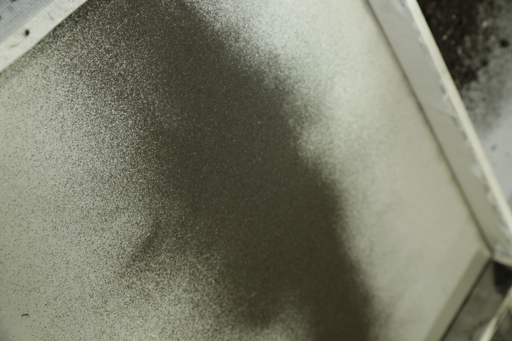

Princípy



inštalácia, 2022
Práca je inšpirovaná kompostovaním na našej záhrade. Hromadením materiálu, ktorý sa stáva dočasným. Na vyhradenom
miesto vzniká masa odpadu z domácnosti, zo záhrady. Proces sa opakuje a materiál sa vrstvy a následne preosieva cez
sitá. Nestála matrica vytvára nestálu grafiku, ktorá sa pri každej inštalácii bude meniť. Princíp však ostáva
rovnaký. Preosievaním hliny cez rôzne druhy sít vznikajú abstraktné kompozície. Inštalácia je dopálená o video a
zvukovú stopu, ktorá vznikla pri procese tvorby.